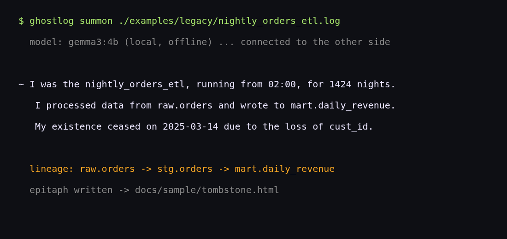

A local séance for dead data pipelines. Ghostlog reads an old job log or SQL file, rebuilds its lineage with sqlglot, and lets Gemma (running locally through Ollama) give the job its voice.

Code, tests, and install steps: github.com/nightmoose/ghostlog